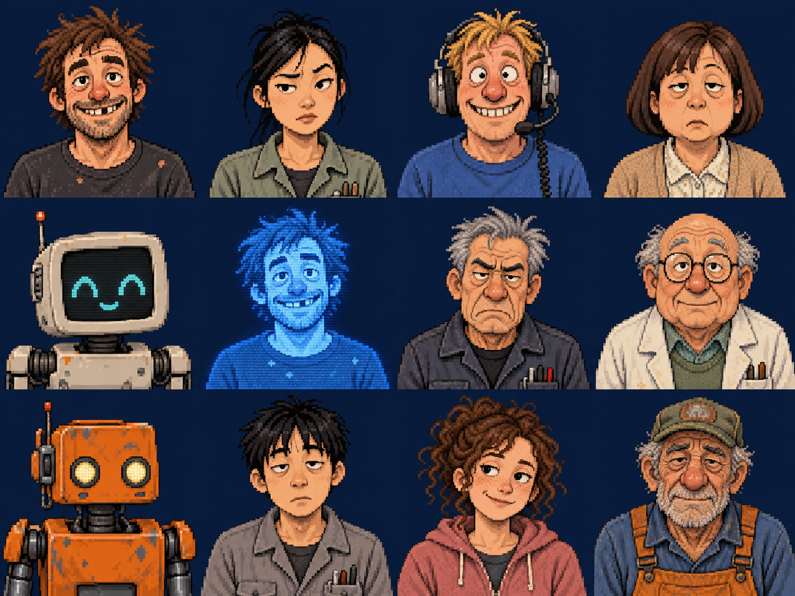
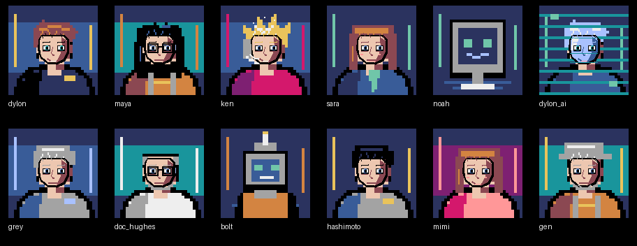

キャラクター
現行の顔デザインです。全員正面向きで、90年代の洋画系アドベンチャーゲームに近い素朴なドット絵へ変えました。普通の小さな会社で働く人らしい服装と、少しコミカルな表情にしています。

720画面用の個別ドット絵試作
128×128 pxの個別画像は実際の会話枠に合わせた技術試作です。顔の完成形は上のデザインシートを基準に調整していきます。



ゲーム画面の提案
720×720を先に設計した画面見本です。背景、キャラ、ロケット、計器は実装時に分けて扱います。


先に作った640×480の会社画面と打ち上げ画面は初期ラフとして残しています。低解像度版は720版の構図を基に、文字とシルエットを調整して制作します。


ロケットのシルエット

Starship V3の黒い面と銀色の面

Eagle 1
物語の初期機体として、細い二段式と単発エンジンを強調しました。白い円筒に左側の反射光と右側の影、黒い段間を置いて立体感を出します。
再使用型・Starship型
次世代機にはグリッドフィンと着陸脚を追加。さらに大型の案にはステンレス色の船体、黒い耐熱タイル、前後フラップを使います。
形状の参考：SpaceXのFalcon 9公式ページ、Falconユーザーガイド、Starship公式ページ、V3初飛行の報告、V3の耐熱タイル試験の報告。
現状の作りと実装メモ
人物はPNGを読み込んで表示しています。一方、会社背景・打ち上げ背景・ロケットは主にPyxelの図形を組み合わせて描画しています。背景画面案をそのまま一枚の画像に置換すると、高度による空の変化やロケットの回転が失われます。背景と動く物体を分けて実装するための設計見本です。
詳しい仕様と素材の使い方は説明書に記載しました。元の編集用データはリポジトリの art/redesign_proposal にあります。